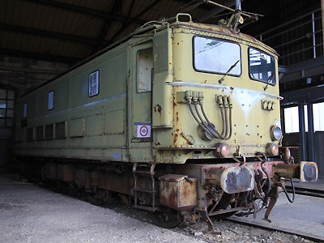

Les BB 300 version 
Stéphane Keller a reproduit les BB 312 et 315 de la première sous-série...
... et la BB 336 de seconde sous-série en version après GRG.
Ferrovia - 30 Septembre 2016
E 240 PO - BB 300 SNCF
Les BB 300 sont des locomotives électriques alimentées en courant continu sous 1,5 kV. De puissance modeste, elles étaient destinées à un service mixte composé de marchandises au long cours en unités multiples ou en desserte locale, de quelques express et d'omnibus.
Une première sous-série de 24 locomotives est commandée par la compagnie du PO-Midi sous la numérotation E 241 à 64 et dans le cadre de l'électrification Tours-Bordeaux. Elles sont cependant réceptionnées par la SNCF, tout juste naissante, en 1938 et 1939. Elles adoptent la norme d'immatriculation nationale en 1941-42 tout en conservant leurs numéros, devenant les 4-BB-0241 à 64. Le "4" signifiant leur appartenance au réseau du Sud-Ouest. Enfin, en 1948, lors d'une ré-immatriculation destinée à mieux différencier les séries de machines issues des anciennes compagnies, elles deviennent les BB 301 à 324. Cette rénumérotation ne sera cependant appliquée sur les machines que progressivement à la peinture et n'est entièrement déployée qu'en 1953. Il faudra attendre encore un peu plus pour voir de nouvelles plaques métalliques. Entre-temps, la E 258 a déjà disparu des effectifs, détruite durant la guerre.
Bien qu'initialement immatriculées à la suite des E 201-220, E 221-224 et E 225-240 du P.O., ces machines sont techniquement les dignes héritières des "BB Midi". Elles sont constituées de deux bogies attelés qui portent les traverses de choc et l'attelage et se transmettent directement les efforts de traction alors que la caisse est simplement posée par-dessus. Celle-ci, courte et de forme parallélépipédique, comporte un espace restreint pour l'équipement électrique entre deux cabines qui possèdent une porte d'accès frontale. Laquelle permet de changer de machine par passerelle lorsqu'elles sont attelées en UM (Unité Multiple). La construction fait encore un large appel aux rivets. Les bogies bi-moteurs conservent des moteurs suspendus par le nez. Une transmission élastique permet néanmoins une vitesse maximale en service de 105 km/h en adhérence totale.
Une seconde sous-série de 31 machines est commandée en 1940 en prévision de l'électrification de Paris-Dijon-Lyon. La guerre en décide autrement et la construction est repoussée entre 1946 et 1948. La SNCF les réceptionne sous les numéros 4-BB-0325 à 55, rapidement simplifiés en BB 325 à 55. Ces machines sont alors déjà surclassées par le prometteur prototype BB-0401 dont sera issue la série BB 8100 construite dans la foulée. Les BB 325 à 355 resteront du coup au Sud-Ouest laissant la ligne impériale à leurs prometteuses cousines.
Carrière
Même si elles se croisaient souvent, les deux sous-séries ont connu des affectations séparées, en raison notamment de l'incompatibilité en UM entre 301-324 et 325-355. Les formations des conducteurs étaient spécifiques également. Si bien que l'on peut, d'un point de vue exploitation, parler de séries de locomotives différentes plutôt que de sous-séries.
Livrées un peu partout dans les dépôts du Sud-Ouest, les 301-324 sont regroupées à Toulouse en 1953 et y effectueront plus de la moitié de leur carrière. Irradiant les Pyrénées, elles poussent jusque Sète à la limite du Sud-Est et vers Paris. Les sections les plus pentues, telles que Ax-les-thermes / Latour-de-Carol restent cependant réservées aux authentiques BB Midi, plus coupleuses et équipées du frein électrique. Les 325-355 débutent leur carrière à Paris SO, puis sont ventilées à Tours et Bordeaux en 1955. Elles parcourent la quasi-totalité du réseau Sud-Ouest électrifié, avec une nette prédominance pour l'axe Paris-Tours-Bordeaux-Hendaye.
Les GRG (Grande Révision Générale) sont effectuées entre 1959 et 1962 sur les BB 301-324 qui ressortent d'atelier à l'identique. Il faut attendre 1967 pour que débutent les GRG de la deuxième sous-série. A cette occasion, l'aspect des 325-355 change profondément avec la suppression de la porte frontale et l'adoption d'un pare-brise en deux parties. Celui-ci, ainsi que les baies latérales (sauf sur la BB 347, proto GRG), sont montés sur joints néoprène. La livrée de ces machines passe du vert celtique au vert bleuté foncé. Les 325-355 sont regroupées à Tours en 1971, tandis que les 301-324 sont mutées à Limoges en 1974.
Fin de carrière à la manuvre
Au cours des années 1980, en raison de l'arrivée des BB 7200, elles sont progressivement déclassées à la manuvre dans les triages ou aux tâches de remonte de rames voyageurs vides à Paris-gare de Lyon, Austerlitz et à Lyon. 43 machines voient leur rapport de réduction modifié et leur vitesse limite réduite à 75 km/h.
Les autres modifications sont la suppression des ventilateurs de traction, d'un compresseur sur les deux, l'ajout de crans de traction à basse vitesse, d'un compteur de vitesse de débranchement indiquant plus finement les très faibles vitesses, de la radio de manuvre, de la conduite principale et de feux rouges. Les onze machines non modifiées sont radiées entre 1982 et 1987. Les machines "M" bénéficieront d'un sursis assez court. La montée en puissance du TGV provoque la chute des besoins de remonte. Des BB 8100 modifiées en BB 80000 et des BB 8500 modifiées en BB 88500 reprennent leurs missions et les BB 300 sont amorties entre 1992 et fin 1997.
Les livrées
Les E 241 à 264 sont livrées à la SNCF en vert extérieur 306. Les numéros sont écrits sur des plaques métalliques qui disparaitront pendant l'occupation. La livrée passe ensuite au vert celtique 301 avec le marquage BB 300 peint. De nouvelles plaques n'apparaitront que dans les années 1950. Des phares unifiés SNCF sont installés. Les BB 301-324 conserveront cet aspect jusqu'à leur radiation. Toutefois, un M peint sur le côté et l'ajout des feux rouges distinguent les machines converties aux manuvres.
Les BB 325-355 changent en revanche radicalement d'aspect à la fin des années 1960 lors de leur GRG. Une livrée vert bleuté foncé 312 avec des moustaches blanches et un logo SNCF de type macaron en relief sont appliqués (étrangement au moment même où la SNCF adopte le logo "allongé" de type UIC sur le matériel remorqué).
Seules deux BB 300 de la seconde sous-série (BB 337 et 348) sont peintes en livrée Béton vers 1992.
Les machines préservées
Après leur radiation, les deux locomotives Béton ont été conservées à l'abri à Bordeaux jusque 2006, alors que les ateliers sont démolis. La BB 337 échoue à Badan où elle est découpée en 2008. La BB 348 a eu plus de chance puisqu'elle a intégré l'annexe de la collection de la Cité du Train à Mohon. Pour les journées du patrimoine 2016, elle a eu droit à une excursion aux ateliers de Toulouse Périole, eux aussi promis à la démolition.
L'APPAF a conservé les BB 327 et 346 à Miramas. Ces machines ont été déplacées au Musée du Chemin de fer de Nîmes en 2015. Elles sont en attente de restauration.
Quelques données techniques
BB 301 à 324 :
Constructeur: Siemens, puis Als-thom
Chaîne de traction : Banc rhéostatique, contacteurs à commande individuelle
Régimes Série (onze crans), Série/Parallèle (huit crans) et Parallèle (neuf crans)
Motorisation : 2 moteurs M1P par bogie, suspendus par le nez.
Puissance en régime continu : 1240 kW
Aptitude à l'UM double (uniquement entre machines de la même sous-série)
Les 301-324 furent aptes à l'UM triple dans les années 1970.
Vitesse maximale en service : 105 km/h, puis 75 km/h
2 pantographes : type S 501 A ou PO-Midi
Longueur : 12,93 m
BB 325 à 355
Constructeur : Alsthom, puis Schneider-Jeumont M.T.E.
Chaîne de traction : Banc rhéostatique, contacteurs à commande pneumatique
Régimes Série (treize crans), Série/Parallèle (neuf crans) et Parallèle (onze crans)
Motorisation : 2 moteurs M1S par bogie, suspendus par le nez.
Puissance totale : 1260 kW
Aptitude à l'UM double (uniquement entre machines de la même sous-série)
Vitesse maximale en service : 105 km/h, puis 75 km/h
2 pantographes : type Etat E20, remplacés en cours de carrière par des unifiés type G
Longueur : 12,98 m
Caractéristiques communes :
Tension d'alimentation : continu 1,5 kV
Largeur : 2,98 m
Empattement des bogies : 6,00 m
Empattement des essieux : 2,95 m
Diamètre des roues 1350 mm
Masse : 80t
Pour plus d'info :
- Bibliographie
Locomotives électriques de type BB Midi et leur descendance - Guy Charmantier - éditions du Cabri
Loco revue : n°449 (mai 1983), n°450 (juin 1983), n°507 (septembre 1988)
Le Train Spécial n°56 4/2008 : Les BB 900/300
- Ailleurs sur le Web
La fiche BB 300 sur Wikipedia
L'inventaire des BB 300 sur Trains du Sud-Ouest
Les BB 300 sur Trains-Europe.
Préservée par l'APPAF, la BB 327 réside à Nîmes... (20/06/2015)

...en compagnie de la 346. Elles attendent une restauration (23/06/2015)
Les BB 348 et 337 béton, préservées à Bordeaux. Trois ans plus tard, la 337 sera découpée à Badan et la 348 conservée à Mohon (27/03/2005)
Les BB 300 version 
Stéphane Keller a reproduit les BB 312 et 315 de la première sous-série...
... et la BB 336 de seconde sous-série en version après GRG.